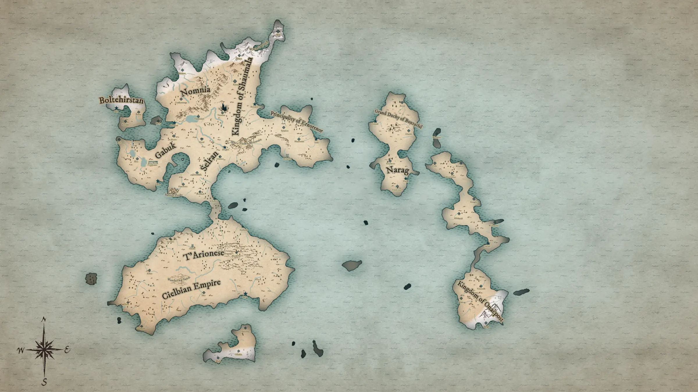

Fonains
Fonains, CSC 50743 c, is a world of the Erevos Galaxy. Its system goes by its designation, CSC 50743, and neighbours Krynnspace. It is a world of eleven realms on two continents and an eastern island chain. The Princes of Elemental Evil were sealed here about twelve thousand years ago, and three of their four weapons are loose again. Thessalar's planar craft fell here about five hundred years ago and brought Tharizdun's influence with it. A corrupted Monolith rose over Fonains a few months ago, and Lola's Boys broke it. Yan-C-Bin, the Prince of Air, is now manifest, and the Day of Chaos is ahead.
Description

Fonains has two continents. The northern continent is broad and broken by bays, with snowfields along its northern coast and mountains down its middle. A narrow isthmus runs south from it, past Baratol, to the southern continent, which is a single rounded landmass with hills in the east and the Wandering Sands in the west. East across open sea lies an island chain: one hourglass island in the north, a long, thin chain below it, and a snowy kingdom at its southern end. A smaller snowy island lies off the southern continent's south coast.
The eleven realms, in order of name:
- Boltehirstan. The north-western isle, off the northern continent, with Kur on its coast and Bafran and Kartabat inland.
- Cielbian Empire. The southern and western half of the southern continent, with the Wandering Sands at its heart, Qosx on its south coast, and Chox, Kebun, Dier and Croipuinx.
- Gabuk. The western lobe of the northern continent, a land of lakes, with the dojos of Zonlilimer, Sivas, Barli, Beyeu and the port of Isken.
- Grand Duchy of Bunzarbil. The northern half of the hourglass island in the east, with Uluharb, Buzah and Gilarukt.
- Kingdom of Onacpost. The southern end of the eastern chain, snow-capped in its south-east, with Vrurzodh and Nirkog.
- Kingdom of Shaumala. The north-east of the northern continent, from the snows of Winter's Teeth and Qhai down to Shaumala on its east coast, with Chiaca and Kalraq. The Trentara Forest lies on its western edge.
- Narag. The southern half of the hourglass island, with Narag, Kizirakzar and Tulukzund.
- Nomnia. The north-west of the northern continent, snowbound in the north, with Shizhwe, Tsamynuurga, Talansalant on its great lake, and Khishand on the western sea.
- Principality of Ernorenor. The eastern peninsula of the northern continent, with Symrion, Rhartasana, Indel and the castle of Hellalean.
- Selran. The south-centre of the northern continent, running down to the isthmus, with Dreghei, Athenor, Batad, Umunbake, Ganerenuz, Mordush and Baratol. The Barrier Peaks stand south of Gabuk and Selran, at the head of the isthmus.
- T'Arionese. The north of the southern continent, where the isthmus lands, with Orerius, Vrobrol, Dedlinde and Metafether in its eastern hills.
The towns of the long chain between Narag and Onacpost (Unda, Nakinb, Khundadzar, Kiragdus, Kharbarak, Mislguard and Shame) and of the southern isle (Driorvaq, Chiafria and Moft) carry no realm's name on the map.
History
About twelve thousand years ago the Princes of Elemental Evil rose on Fonains. The six gods of the Accordance stepped in, helped forge four weapons, and sealed the Princes away with the weapons as their keys (see the four keys). The fire genasi who became the Cre'Tez have guarded the fire key, Tinderstrike, since that sealing.
About five hundred years ago Thessalar's planar craft, a floating city of many tiers, fell on Fonains. Lola's Boys, sent back in time by the Accordance to the year 425, took its control and defence gems, and without them it came down. The crash freed N'ghathrod, who was a prisoner aboard; he escaped in the fall and never reached Fonains, and his elder brain was left trapped beneath the wreck. The craft broke apart as it fell. Its main body raised the Barrier Peaks, pieces that broke off became Daoine Gloine and Kwalish's island, and the Thessalkraken came down separately in the sea. One of Tharizdun's temples was aboard. Her influence arrived with it, spread slowly through the world from the fallen temple, and grew into new cults. In time those cults raised four prophets.
About three and a half centuries ago a sect of the fire genasi tried to summon Imix, the Prince of Fire. The few who resisted called for help, and Asmodeus gave them Tinderstrike to seal Imix again and bound the key to their blood. The price was that Imix be forgotten. Over the generations since, the line has turned tiefling: the Cre'Tez. Chloe Chespetes stopped the sect by flooding its laboratory with lava, and was trapped there as a fire elemental.
About three hundred years ago most of Fonains's dragons left to face Takhisis, whom other worlds call Tiamat, and few remain. They have not reached Krynn; their own politics hold them. Fonains remembers their leaving as a great hunt. About a century and a half ago white dragon siblings raided a dragon's spire, and the Green Lady fled to the Misty Vale, where she became its keeper. Three white dragon eggs left Winter's Teeth in the same years.
About thirty years ago Kwalish lost his laboratory on its floating island. His adventuring party died to the Sphinx, and he put their brains in jars, opened a gate to the Nine Hells, and a bone devil drove him out. About six years ago the Silver Wave Bandits took the Vessel of Tui and La from Hayden Crabshore, and straight after it Drown, the trident, was pulled from the living reef that held it.
A few months ago, on the Darkest Day, a cult of Vecna worked a ritual on Giorge at the eclipse. Five cultists held the ritual. Four channelled the Princes of Elemental Evil, and the fifth held pieces of a black crystal, an artifact of Tharizdun. The ritual drove Fonains to its Zenith, and as it neared its peak the Monolith erupted over a cemetery. Tharizdun's crystal replicated into the Monolith as it formed, so Fonains's Monolith formed corrupted: a tunnel to Tharizdun's prison. The first champions of the Accordance died fighting it. The people the Monolith took, the Vanished, went to her prison, which has no address in any known cosmology.
The gods of the Accordance cannot set foot on a world, because a god and a world's heart carry the same charge and push apart (polarity), so they act through champions; Vecna came to the Darkest Day only as a projection. The Accordance chose Lola's Boys as its next champions in Daoine Gloine, where they found Kwalish: “First we start with the Monolith destroyed. Then you must find the other portals to the Elemental Planes.” They brought the stolen gems home, and Kwalish raised his island on them. His cannon split the Monolith. Four great shards fell, each guarded by a Prince-aligned elemental, turning around a black cyst in the Trentara Forest, and many smaller shards came from them. Three hundred and thirty-three of the small shards are black; the rest took colours close to their elemental affinities. Shothragot, Tharizdun's avatar, spoke in the Monolith's last hours: “Wait for the day of chaos.”
The months since have been the cults' months. Aerisi Kalinoth took Windvane from the Misty Vale. The Sacred Stone took Ironfang from under the Martyr Dome. Lola's Boys freed Dharra and Rihiri Cre'Tez from a fire cult in Baratol, and broke N'ghathrod's elder brain beneath the Barrier Peaks; it was buried in the collapse, and it teleported out and escaped. Then came eight days of storm, heaviest at the Monolith's ruins, and the air shard opened onto the Feathergale Spire. On the floating island above the spire Aerisi raised Windvane and called forth Yan-C-Bin, and the Prince of Air is manifest. That is Fonains now, two to three months after the Monolith broke. The Day of Chaos, when the four Princes enter Fonains together and break the barriers between the planes so that Tharizdun can leave her prison, is still ahead.
Peoples and culture
Fonains is a world of steel and black powder. Elemental cults have grown wherever Tharizdun's influence spread, each serving one Prince, and the Drowned God keeps a priesthood of its own.
The elemental cults
- Air. Yan-C-Bin's cult, led by Aerisi Kalinoth, its prophet and queen. Its sign is an inverted triangle with three lines, worn as downward-arrow pendants and cut into its rune darts.
- Earth. The Sacred Stone, Ogrémoch's cult, whose sign is a triangle. It seized the dojos of Zonlilimer and took Ironfang at the Tournament of Masters.
- Fire. Imix's cult, which treats Asmodus Cre'Tez as its prophet. A cell under Elizar Dryflagon held Dharra and Rihiri Cre'Tez in Baratol, and Elizar's brand matches the Cre'Tez emblem.
- The kraken priests. The Drowned God's priests, who revere the Thessalkraken and serve what they call “the mind”. They kept the reef that held Drown.
The cults' weapons of last resort are devastation orbs: a fire orb burst in the square at Gransby, and earth orbs turned up at Zonlilimer. Behind the cults stands the Elder Elemental Eye, Tharizdun; they grew from her influence.
The dojos of Zonlilimer
Zonlilimer, in Gabuk, is a town of martial schools. Its masters meet at the Tournament of Masters beneath the Martyr Dome, which stands over a sealed dwarven vault. The Sacred Stone seized the dojos, and Lola's Boys went to Zonlilimer to win them back.
The four keys
The four weapons the Accordance forged are the keys to the Princes' portals: Tinderstrike, a dagger, for Imix; Ironfang, a war pick, for Ogrémoch; Windvane, a spear, for Yan-C-Bin; and Drown, a trident, for Olhydra. Each is summoned with the words “With this key, I call forth…”. A Prince's portal closes when its weapon is thrown or struck into it, and the weapon is destroyed.
- Tinderstrike. Bound to the Cre'Tez blood and kept in the Eternal Flame temple. Asmodeus gave it to the fire genasi who resisted Imix.
- Ironfang. Taken by Marlos of the Sacred Stone from the vault under the Martyr Dome.
- Windvane. Kept at Eldath's tree in the Misty Vale until Aerisi Kalinoth split the tree and took it. She used it to call forth Yan-C-Bin.
- Drown. Sealed in the heart of a living coral reef grown over the ruins of a sunken city, guarded by the Thessalkraken and revered by kraken priests. Pulling it killed the reef and sank the island. Gar Shatterkeel holds it, and he hears a voice in the water: “The others are in motion.”
The Seekers
Across the galaxy Vecna is an open god, worshipped under many names, and his followers are the Seekers.
Notable people
Lola's Boys
The champions of the Accordance, who broke the Monolith.
Duran Solas
Of Lola's Boys
Caught in a repeating loop until he woke beneath the Barrier Peaks.
Duran was caught in a loop that ran him through the same stretch of time again and again. He woke from it in the elder brain's lair beneath the Barrier Peaks.
Eldree
Silver pseudodragon, Hayden's familiar
An aspect of Bahamut speaks through Eldree's egg.
Hayden Crabshore
Of Lola's Boys
Lost the Vessel of Tui and La, wears a prosthetic arm, and has called Asmodeus by name.
The Silver Wave Bandits got Hayden drunk on Nev's and took the Vessel of Tui and La from him; Lola's Boys later stole it back from Garshak's ship through time. In the Temple of Moloch he walked back through his own past. He wears a prosthetic arm, and he once summoned Asmodeus by name, and Asmodeus answered. Eldree is his familiar.
Jorgi Panamop
Of Lola's Boys
Questioned the dojos' creed, was petrified by Marlos, and burned the mind flayer.
Jorgi questioned the creed of Cobra Kai, one of the dojos of Zonlilimer, before the Sacred Stone seized them. He had a vision of a fanged eye. At the Tournament of Masters Marlos petrified him and left with Ironfang. In the elder brain's lair he burned the mind flayer. He is a different person from Giorge.
Lola Lolita Bacon
Granny, of Lola's Place
Keeps Lola's Place, and adventured a century ago.
Granny keeps Lola's Place. About a century ago she adventured with Manny and Cookie Farnsworth as More Than Just Desserts, and made a pilgrimage to the Misty Vale. She took in the Trintar refugees after the Monolith broke.
Lusion Cre'Tez
Of Lola's Boys; a Cre'Tez brother, 16
A fast talker who sings his way in and out of trouble.
The family's jester, irreverent and silver-tongued, who uses his voice to pester his siblings or raise their spirits. Asmodeus spared him from the Alpha and sent him to the Temple of Moloch, where he joined Lola's Boys.
Xero Cre'Tez
Of Lola's Boys; a Cre'Tez brother, 18
Saw the Elder Elemental Eye, and holds Kevulan's birthright.
The middle Cre'Tez child, a reader, curious about the world outside his family and wary of anyone in authority. While ethereal in the year 425 he saw a giant purple slit-pupiled eye watching the party: the Elder Elemental Eye, Tharizdun. He read Kwalish's journal in the cells of the monastery, and answered a phoenix's summons to Gransby. Kevulan is bound to him, and Kevulan's birthright is willed to him.
Ziko Mistbane
Of Lola's Boys
Came out of the Monolith's cyst with his blade turned black.
When the Monolith broke, its black cyst dropped Ziko, and his blade had turned black. He left the sword under the bed at Lola's Place, and Giorge attacked the house for it.
Others
Aerisi Kalinoth
Prophet and queen of the air cult
Took Windvane and called forth Yan-C-Bin.
A moon elf with illusory wings, Yan-C-Bin's prophet and the air cult's queen. She split Eldath's tree in the Misty Vale and took Windvane, leaving a black spiral on the altar. On the floating island above the Feathergale Spire she raised the spear: “With this key, I call forth my lord and master.” The Prince of Air came.
Bastian Thermandar
Fell at Gransby
Burst a devastation orb at Gransby and fell there.
A blond human. He drew Xero, Kevulan and the Bacon siblings to Gransby with a phoenix's summons, and burst a devastation orb that raised a fire elemental in the town square. He fell there.
Chloe Chespetes
Freed from the Plane of Fire
Trapped as a fire elemental for three and a half centuries, the Pedra Ardente fused to her hand.
About three and a half centuries ago a sect of her own clan tried to use the Pedra Ardente to open a portal and release Imix. Her clan and the Cre'Tez fought them, and Chloe flooded the laboratory with lava to stop them. She was infused with the Plane of Fire and trapped as a fire elemental, the gem fused into her hand, until Clint Dashforest's crew freed her at the Blooming Glass.
Clint Dashforest
Bounty hunter out of Orerius
Came through a color pool from the Bellwether Crow, before the Monolith rose.
Caelestis crew who went through a color pool on purpose with the second Distinction piece and came out on Fonains about a year ago, before the Monolith appeared. He rides with the Six Shooters out of Orerius, carries a laser pistol on a world of black powder, and took the Blooming Glass job that handed the Pedra Ardente to Finerva. Dossier →
The Cre'Tez
Keepers of Tinderstrike
A fire genasi line turned tiefling, at war over its inheritance.
The family that has kept Tinderstrike since the sealing, seated at the Cre'Tez estate in Orerius. Its head, Cenvinzo, invoked the Alpha, and the heirs are fighting over the birthright. Lusion and Xero ride with Lola's Boys. A voice reached Vanifer, the eldest, and traded her the lost meaning of the Alpha and the secret in the Cre'Tez blood. Faction →
Elizar Dryflagon
Fire cult leader at Baratol
Held Dharra and Rihiri in a tower in Baratol.
He led the fire cult cell that held Dharra and Rihiri Cre'Tez in a tower in Baratol. Lola's Boys freed the sisters and left Elizar in the woods. His brand matches the Cre'Tez emblem.
Gar Shatterkeel
Holder of Drown
Holds the trident, and hears a voice in the water.
He holds Drown, pulled from the reef over the sunken city about six years ago, and hears a voice in the water: “The others are in motion.”
Giorge
Vessel of the Darkest Day
Bait for the ritual that raised the Monolith; now searching for its pieces.
A cult of Vecna worked its ritual on Giorge at the eclipse of the Darkest Day, as bait. He searches for pieces of the broken Monolith, and he attacked Lola's Place for Ziko's sword. He is a different person from Jorgi.
The Green Lady
Keeper of the Misty Vale
Cut off from Eldath and trapped in dragon form.
She fled to the Misty Vale about a century and a half ago and became its keeper, guarding Windvane at Eldath's tree. When Aerisi split the tree she was cut off from Eldath and trapped in dragon form.
Kwalish
Gnome planar specialist
Lost his island laboratory, was found in Daoine Gloine, and split the Monolith with its cannon.
A gnome planar specialist with a gate and a planar device. About thirty years ago his party died to the Sphinx, he opened a gate to the Nine Hells, and a bone devil drove him from his laboratory. Lola's Boys found him in the bauble laboratory in Daoine Gloine. With the gems they brought back from the year 425 he raised his island again, and its cannon split the Monolith. Once the island flew again he freed his friends' brains. When Lola's Boys first set out to find him, his nephew Anaxi Zephries, the Cartophile, lent them an unfinished map of the Barrier Peaks from the Myriad of Maps. His laboratory →
Marlos
Of the Sacred Stone
Petrified Jorgi and took Ironfang.
At the Tournament of Masters, when Lola's Boys opened the dwarven vault under the Martyr Dome, Marlos petrified Jorgi Panamop and left with Ironfang.
Seldra
Gem thief, of the year 425
Freed by Lola's Boys in the Temple of Moloch.
A gem thief held in the Temple of Moloch aboard Thessalar's craft in the year 425. Lola's Boys freed her on the visit that took the gems.
Thessalar
The Mad Mage, inside the wreck
Master of the planar craft, still inside it under the Barrier Peaks.
Halaster Blackcloak, the Mad Mage, master of the planar craft. He is still inside its wreck under the Barrier Peaks, and on Fonains his name lands on nothing. Dossier →
Whazzit
Quasit, pilot of the Grand Master
Piloted the Grand Master, Kwalish's war machine in a bone devil's shape.
The Grand Master of the monastery looks like a bone devil. It is Kwalish's war-machine exoskeleton, and Whazzit, a quasit, pilots it. When it fell he climbed out, and later he turned on the party. Kwalish's laboratory →
Points of interest
Barrier Peaks
A knot of mountains south of Gabuk and Selran, near Ganerenuz, at the head of the isthmus. The main body of Thessalar's planar craft raised them when it came down, and the wreck under them is the Mad Mage's dungeon, with Thessalar still inside. Caverns run through the peaks, their walls cut with infernal names. Beneath them lay N'ghathrod's elder brain for about five hundred years, in a lair with a pool of tadpoles, until Lola's Boys broke it.
Daoine Gloine and the Monastery of the Distressed Body
Past the Jaded Forest and through the Barrier Peaks, a floating island hangs above a valley. The way in passes the Sphinx and crosses the valley by skiff. The monks of the Monastery of the Distressed Body live on the island, which was Kwalish's first laboratory and is a broken-off piece of Thessalar's craft. Below it lies Daoine Gloine, a glass city sealed under one huge ooze. Both are on the craft's page: Kwalish's laboratory, Daoine Gloine and the teleportation fields.
Eternal Flame temple
The Cre'Tez keep Tinderstrike in the Eternal Flame temple. An heir needs every birthright to claim it.
Feathergale Spire and the Haunted Keeps
The Feathergale Spire is one of the four Haunted Keeps, with Rivergard Keep, the Sacred Stone Monastery and Scarlet Moon Hall. During the storm at the Monolith's ruins the air shard opened onto the spire. Yan-C-Bin is manifest on the floating island above it.
Lola's Place
Granny's house, where Lola's Boys rest between jobs. Granny took in the Trintar refugees there after the Monolith broke. Giorge attacked the house for Ziko's sword, which Ziko had left under his bed.
Misty Vale
A vale sacred to Eldath, kept for a century and a half by the Green Lady. Windvane lay at Eldath's tree until Aerisi Kalinoth split the tree and took it. A black spiral, Tharizdun's mark, spread across the altar.
Orerius and the Cre'Tez estate
A town in the north of T'Arionese, near the coast west of where the isthmus lands, marked on the map by a castle. The Cre'Tez estate stands there, and it is the siblings' home. Clint Dashforest works bounties out of Orerius, and Finerva posted the Blooming Glass bounty there for the Cre'Tez.
Trentara Forest and the Monolith's ruins
A forest in the north of the northern continent, between Nomnia and the Kingdom of Shaumala, marked on the map by a black spire beside the town of Trentara. The remains of the Monolith lie there: the black cyst, with the four great shards turning around it. The eight days of storm fell heaviest here, and the air shard opened.
Wandering Sands
Desert in the west of the Cielbian Empire. The Blooming Glass stands there, a petal-layered construct of Rubicon, a gem close to diamond, throwing prismatic light. It lies at the end of the Shattered Path, which looks like stars lying on the ground, and a research facility buried beneath it was built to study the Pedra Ardente.
White Plume Mountain
A mountain east of Dreghei, on Selran's border with the Kingdom of Shaumala.
In the campaign
- Before Voyage 1. Vocath's people came back from Fonains with fragments of the broken Monolith as cargo, and one ended up in Boogie: the Fonains shard.
What's hidden
- Vecna knew. Vecna nudged Fonains's Zenith knowing Tharizdun's crystal would ride it. He uses Tharizdun as a contingency, a battering ram against the barriers and does not ally with her; the two distrust each other. Her weakening of reality on Fonains serves his ends. Lola's Boys destroying the Monolith forced him to change his plan.
- Lola's Boys made their own enemy. By taking the gems in the year 425 they brought the craft down, freed N'ghathrod, and landed Tharizdun's foothold on their own world.
- The temple piece. The piece of the craft that held Tharizdun's temple came down somewhere other than the Barrier Peaks. Shothragot, her avatar, was bound to that temple, its true vestige may still be there, and Giorge may be trying to reach it.
- The fire cult. Vanifer leads it, and on her orders it plays along with Asmodus and treats him as its prophet. The voice that turned her was a Seeker chapter (the Cre'Tez).
Using Fonains
Fonains is one of three campaign worlds, with Caelestis and Krynn. Its canon comes first from Lola's Boys, the first campaign, which everything builds from, and also from one-shots in which players played both heroes and villains. Every one-shot ties in. Lola's Boys began as a run of the Lost Laboratory of Kwalish with Temple of Moloch, and grew into a campaign built on Princes of the Apocalypse, Lost Laboratory of Kwalish and Temple of Moloch. Transcripts are canon; the modules fix spelling and context only.
Kept from the table over the modules: Seldra (module: Seodra), “speckled amber” (module: speckled gold) and “the plane of gems” (module: the Quasi-elemental Plane of Mineral). Windvane appeared at the table as a windvane staff. Bastian Thermandar is a blond human at the table and a fire genasi in the module. The keys carry a family history at the table (the Accordance, and Imix sealed by the Cre'Tez line), and the module's Vizeran DeVir has no part. The time device that carried Lola's Boys to the year 425 is a mini Texel with four bauble slots, attuned with blood.
Timing against Caelestis
Caelestis's present is level with Lola's Boys Session 28, two to three months after the Monolith broke, and Krynn's present is level with both. Clint Dashforest reached Fonains about a year ago, before the Monolith appeared, and was there when it did. Boogie's shard came from the broken Monolith through Vocath's line, before Voyage 1. The full run of Lola's Boys, session by session, is on the Timeline.
Threads
- The neothelids. Tadpoles left in the pool under the Barrier Peaks may grow into neothelids.
- The elder brain. It teleported out of the collapse; N'ghathrod believed it dead (dossier).
- The second Distinction piece. Clint carried it through the pool, and it is somewhere on Fonains (artifact).
- Eldree's egg. The aspect of Bahamut that speaks through it ties Fonains to Krynn, and the link is not yet in play.
- The shards. Boogie carries one, and FR-022 is another, recovered by the Order. Giorge hunts the rest.
- The Day of Chaos. The crew meets the Princes' pressure as elemental-plane phenomena on the worlds it visits (Campaign).
Still to decide
- Where the piece of the craft holding Tharizdun's temple came down is not set.
- The Monolith erupted over a cemetery on the Darkest Day, and its remains lie in the Trentara Forest; where that cemetery lies is not set.
- How Tinderstrike came to the Cre'Tez is written two ways: the genasi have guarded the fire key since the sealing, and Asmodeus gave it to them about three and a half centuries ago. Which is the history is not set.
- The map spells the dojo town Zonlilemer and the isthmus town Baratal; the Timeline spells them Zonlilimer and Baratol. The spellings are not settled.
- Gransby, the Misty Vale, the Jaded Forest, Drainsville, Lola's Place, the Eternal Flame temple, the Feathergale Spire and the monastery's valley are not placed on the map.
- Whether the Trintar refugees came from Trentara is not set.
- Fonains's system has no name; it goes by its designation, CSC 50743.